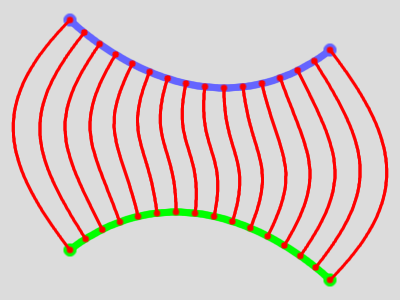
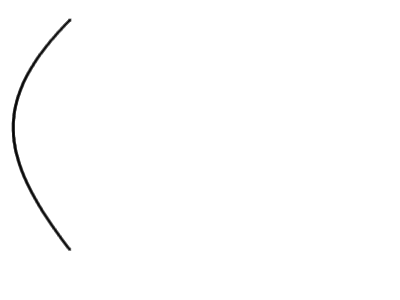

ofn-path-rungs creates a series of paths (the rungs/steps) between two existing paths that are used as stiles/stringers. The resulting path(s) can be used for complex still drawings or to create line animations. If the paths contain several strokes, the corresponding strokes are used.
Blue and green being the original path, ofn-path-rungs will create the strokes of the red path:

There are two diffferent mode of operations:
The script can be found in the right-click menu of a path in the Paths list (Tools>Path Rungs...). This path is taken as the "From" path, and the first parameter of the dialog is the "To" path.
There are two parameters:
The number of steps required
How the steps are spread out. This option is quite useful when doing animations:
Linear: the steps are equally spaced

Acceleration: the interval between the steps increases, as if subjected to a constant acceleration.
Deceleration: the interval between the steps decreases, as if subjected to a constant deceleration.
Swing: the interval between the steps is wider in the middle. It actually follows a sine curve, like the tip of a pendulum. This is also the spread you see in perspective if you wrap the path on a cylinder.
There are two parameters:
The spacing in pixels between the contact points of two rungs on the "From" path. The spacing on the "To" path will depend on the ratio of the lengths of the "From" and "To" strokes.
The spacing is adjusted to obtain a constant interval. For instance, specifying a spacing of 3 pixels will yield an actual spacing of 3.03 pixels on a 100-pixels stroke.
Guarantees that there will be rungs between the corresponding anchors of the "From" and "To" strokes. This requires the strokes to have an equal number of anchors. The spacing is adjusted for each interval between anchors to obtain an integer number of rungs.
The sides on which the rungs attach to the stiles can be specified.
The angle of the rung to the stile at the point of contact. 0 is perpendicular, positive angles are forward.
The bendiness of the rung, which is the attraction of the line defined by the incidence above. '0' on both sides gives a straight line.
Swaps the ends of one of the support paths. This is useful to make all the rungs cross between the two paths, or to fix a support path that has been created pointing in the wrong direction.
Generates all the rungs as strokes in one single path.